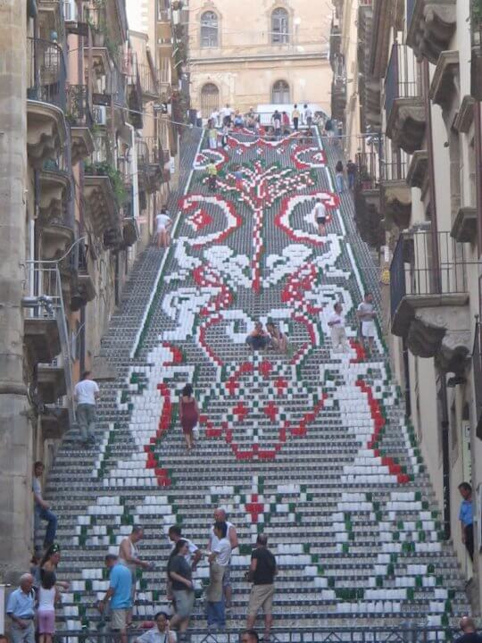

Le origini della mafia di Palermo
La mafia di Palermo ha le sue radici nel XVIII secolo, quando la Sicilia era governata dai Borboni di Napoli. In quel periodo, l'isola era una terra arretrata e povera, con una classe politica corrotta e un sistema giudiziario inefficace. La mafia nacque come una sorta di giustizia privata, con l'obiettivo di proteggere i poveri e gli indifesi dalla violenza e dall'ingiustizia. Tuttavia, presto la mafia si trasformò in un'organizzazione criminale, che usava la violenza per estorcere denaro e controllare il territorio.
Nel corso dei decenni, la mafia di Palermo si è evoluta e ha assunto un ruolo sempre più centrale nella vita politica ed economica della città. Durante il fascismo, la mafia di Palermo ha collaborato con il regime per reprimere le attività politiche dell'opposizione. Dopo la Seconda Guerra Mondiale, la mafia ha prosperato grazie alla ricostruzione dell'economia italiana e al boom economico degli anni '50 e '60.
Gli attentati della mafia di Palermo
Nel corso degli anni, la mafia di Palermo ha commesso numerosi attentati per eliminare i suoi nemici politici e consolidare il suo potere. Tra gli attentati più famosi ci sono la strage di Capaci, avvenuta il 23 maggio 1992, in cui perse la vita il giudice Giovanni Falcone, la sua moglie e tre agenti della scorta, e l'attentato di via D'Amelio, avvenuto il 19 luglio 1992, in cui perse la vita il giudice Paolo Borsellino e cinque agenti della scorta.
Tuttavia, la mafia di Palermo ha anche subito alcuni importanti colpi di stato, come l'operazione "Mani pulite", che ha portato all'arresto di centinaia di mafiosi e politici corrotti negli anni '90, e l'arresto di Bernardo Provenzano, il boss della mafia di Palermo, nel 2006.
Le grandi personalità che hanno combattuto la mafia di Palermo
La lotta contro la mafia di Palermo ha visto la partecipazione di molti magistrati, poliziotti, politici e attivisti che hanno dedicato la propria vita a contrastare il potere criminale dell'organizzazione. Tra questi ci sono il giudice Giovanni Falcone, che ha condotto numerose indagini sulla mafia e ha sviluppato il modello di collaborazione dei pentiti, e il giudice Paolo Borsellino, che ha continuato l'opera di Falcone dopo la sua morte.
Altre figure importanti nella lotta alla mafia di Palermo sono state il generale Carlo Alberto Dalla Chiesa, nominato prefetto di Palermo nel 1982 e ucciso dalla mafia l'anno successivo, e il giornalista Giuseppe Impastato, che ha denunciato la presenza della mafia nella sua città natale, Cinisi, e che è stato assassinato nel 1978.
Un'altra figura importante nella lotta contro la mafia è stata la giornalista e scrittrice siciliana Rita Atria, che ha deciso di collaborare con la giustizia dopo l'uccisione del padre e del fratello da parte della mafia. La sua testimonianza ha permesso di condannare molti mafiosi e ha ispirato molte altre persone a denunciare la mafia.
Un'altra menzione d'onore importante è il sindaco di Palermo Leoluca Orlando, che ha guidato la città nella lotta contro la mafia negli anni '90.
La lotta contro la mafia di Palermo è stata una delle sfide più grandi e difficili della storia dell'Italia. Tuttavia, grazie all'impegno e alla determinazione di molte persone coraggiose, la città di Palermo e l'intero paese sono oggi un po' più liberi dalla sua influenza nefasta.
Le vittime innocenti della mafia di Palermo
La mafia di Palermo ha causato la morte di molte persone innocenti, tra cui molti bambini e giovani. Ad esempio, nel 1984 la mafia ha fatto esplodere una bomba davanti alla chiesa di San Giuseppe a Palermo, uccidendo otto persone e ferendone altre 107. Tra le vittime c'erano due bambini e una donna incinta.
La mafia di Palermo ha anche commesso molti omicidi mirati, uccidendo persone che si erano opposte al loro potere o che erano state sospettate di collaborare con la giustizia. Tuttavia, molti di questi omicidi sono rimasti impuniti, e molte famiglie delle vittime hanno continuato a chiedere giustizia per anni.
La cultura della mafia di Palermo
La mafia di Palermo non è solo un'organizzazione criminale, ma anche una cultura e una mentalità che permea la vita della città. La cultura della mafia si basa sulla violenza, sull'omertà (il codice del silenzio) e sulla corruzione. La mafia di Palermo ha infiltrato le istituzioni e la società civile, controllando l'economia e la politica locale.
Tuttavia, negli ultimi anni molti cittadini di Palermo si sono ribellati alla cultura della mafia, denunciando i suoi abusi e chiedendo giustizia per le vittime. La città ha visto la nascita di molti movimenti civili e di gruppi di cittadini che si sono organizzati per contrastare la mafia e promuovere la legalità.
Conclusioni
La mafia di Palermo è stata una delle organizzazioni criminali più potenti e spietate della storia italiana. Per molti anni, ha dominato la città e ha influenzato la vita politica ed economica dell'intero paese. Tuttavia, la mafia non è stata mai invincibile, e molti coraggiosi uomini e donne hanno combattuto per porre fine al suo dominio.
Essa ha rappresentato per molti anni una minaccia per la democrazia e la legalità in Italia. Tuttavia, la lotta contro la mafia ha dimostrato che è possibile contrastare il potere criminale dell'organizzazione attraverso l'impegno e la determinazione delle istituzioni e della società civile.
La storia della mafia di Palermo ci insegna l'importanza di difendere i valori della democrazia e della legalità, di promuovere la cultura della trasparenza e della partecipazione, e di lavorare insieme per costruire un futuro sicuro dove possiamo vivere senza paure.